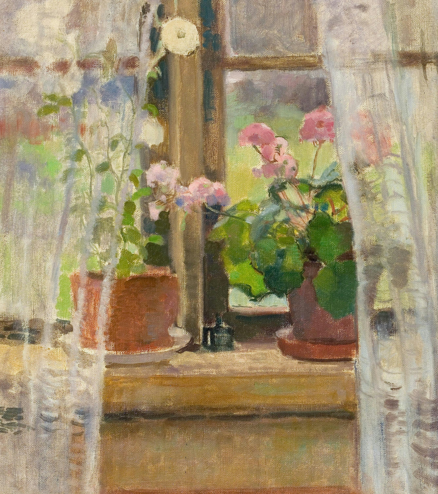
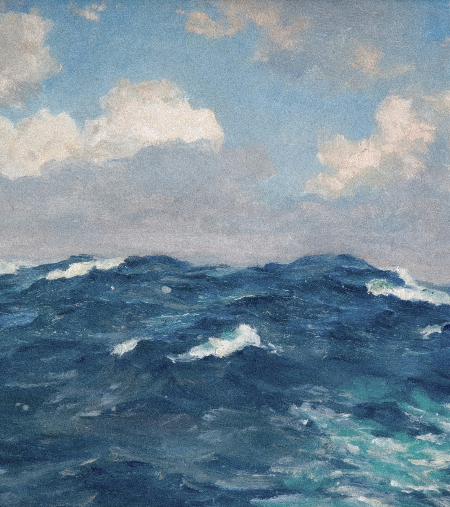

A study of shape, rhythm and balance through works built from simple forms. Quiet Geometry brings together structured basic compositions, the restrained palettes and playful arrangements where line and colour create a sense of order without losing their expressive character.
Everyday objects become something worth looking at twice. Objects of Affection gathers still lifes of flowers, fruit, vessels and familiar domestic details, revealing how colour, light and composition can transform ordinary subjects into intimate moments of beauty.
From quiet portraits to expressive gestures, Human Presence explores the many ways artists have represented the figure. The collection moves between intimacy, movement and character, bringing together works where posture, expression and form reveal something distinctly.
Landscapes shaped by atmosphere rather than destination. Beyond the Window brings together gardens, coastlines, fields and distant horizons, capturing changing light, colour and weather through works that invite a slower way of seeing the world around us.

